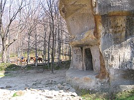

Gallary



Ivano-Frankivsk, Ivano-Frankivsk region
After studying caves, log cabins, grooves, steps carved in stone, scientists came to the conclusion that the rocks were used by people who lived here in the tenth century, for housing and as a fortress. Cave rooms have clear geometric shapes, correct proportions, smooth surfaces of vertical walls, fairly accurate rectangularity, clean ceiling finish. In the X-XII centuries. N. BC there was a pagan sanctuary - paleoobservatory.
The settlement is surrounded on two sides by rocks, on the fourth side it is limited by a shaft and an inner moat 10 m wide. The diameter of the site is 40 m. The well (2 x 2 m, modern depth 5-6 m) does not reach the water. Three caves with preserved grooves from logs are carved into the rocks. The rocks depict solar signs, palm-shaped depressions, masks. Nearby is a large burial mound, consisting of mounds with a diameter of 5 m and a height of 1 m.Remains of 80% of the traces of construction will allow to recreate the complex in the most probable form - to create a single complex of wooden rock fortifications, which will certainly impress and capture the imagination of tourists and excursionists, add attractiveness to a unique natural phenomenon.
Near the village of Bubnyshche in the Ivano-Frankivsk region rise rocks, which are popularly called "Dovbushev". According to one legend, on top of one of the rocks - the Great One - are hidden treasures taken by Dovbush from the Polish lords. And near the rocks there are the remains of a defensive moat and a shaft on which there was a fence. Three deep caves carved by iron cleavers attract attention in the rocks. A little higher is a well carved in stone, where water supply was stored. At the top of the rocks are visible one and a half meters in diameter bowls, which some scientists consider altars, others - for vessels for burning resin in order to signal the approach of the enemy.
It was in this ancient Bubny settlement that the legendary Dovbush opryshki found refuge when they passed here with their detachment in 1744 during a campaign against Drohobych and Turku. Opryshki built protective barriers and bins in the rocks. People even show the feet and hands of the famous leader reflected on the stone. There are many such monuments connected with Dovbush, in particular, in Horishni Yasen there is a large stone of Oleksa Dovbush, on Kedrovaty there is a stone "chair" of Dovbush, Dovbush cave on Hoverla and others. And in Pechenizhyn, where the hero was born, on a hill rises on a pedestal a large bust of Dovbush, created by sculptor V. Borisenko.The popularity of Dovbush Rocks was greatly facilitated by the creation of a recreational area here, and in 1981 the Dovbush Rocks Botanical and Geomorphological Reserve received the status of a natural monument of national importance. [2]